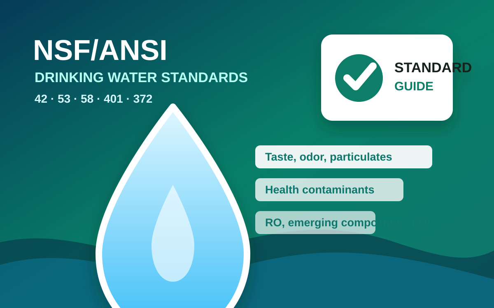

StandardsNSF/ANSI Drinking-Water Standards
Water-quality measurement notes, contaminant endpoints, and NSF/ANSI standard maps collected in one directory.
Water-quality measurement notes, contaminant endpoints, and NSF/ANSI standard maps collected in one directory.